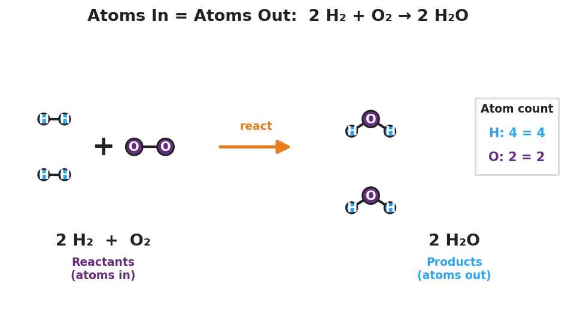

01 Phenomenon
A piece of steel wool is weighed, then burned, then weighed again. You might expect it to weigh less afterward — but it weighs more. When magnesium ribbon is burned on a balance, the mass also goes up. Nothing was added by hand, and yet there is more mass than before. The atoms did not appear from nowhere, and none disappeared in the smoke and flame — they were only rearranged. A chemical equation is how chemists write that rearrangement down so that no atom is ever lost or invented.
02 Driving question
Why must atoms balance on both sides of a chemical equation?
03 Notice & wonder
| I notice… | I wonder… |
|---|---|
Turn & Talk #1: If every atom that goes into a reaction has to come out the other side, what would happen in real life if a written equation showed 2 oxygen atoms on the left but only 1 on the right? Is that possible?
04 Initial model
Your group has counters: white = hydrogen (H) and red = oxygen (O). Hydrogen gas is H₂ (two whites bonded). Oxygen gas is O₂ (two reds bonded). Water is H₂O (two whites + one red).
The rule: You may take molecules apart and rebuild them, but you may NOT add or remove any atom. Build as much water as you can with no atoms left over.
Start with one H₂ and one O₂. Try to build water. What gets left over? _______________
Add one more whole H₂ molecule and try again. Now write your build as a recipe:
______ H₂ + ______ O₂ → ______ H₂O
- Count the atoms on each side of your recipe:
| H atoms | O atoms | |
|---|---|---|
| Reactant side (left) | ||
| Product side (right) |
- Did your counts come out equal on both sides? _______________
05 Investigate
Part 1 — What does the big number do?
In your recipe, the big number in front of each molecule is not the same as the small subscript inside the formula. The big number tells you how many whole copies of that molecule you have.
In 2 H₂O, how many water molecules is that? _______________
In 2 H₂O, how many total H atoms? (big number × subscript) _______________
In 2 H₂O, how many total O atoms? _______________
Part 2 — Balance these equations
For each equation, adjust only the big numbers in front until every element has the same number of atoms on both sides. Never change a subscript — that would change the substance. Fill in the atom-count check.
Equation 1 (done with your teacher): H₂ + Cl₂ → HCl
Balanced: ______ H₂ + ______ Cl₂ → ______ HCl
| H | Cl | |
|---|---|---|
| Left | ||
| Right |
Equation 2: Mg + O₂ → MgO (this is the magnesium-burning reaction from the demo!)
Balanced: ______ Mg + ______ O₂ → ______ MgO
| Mg | O | |
|---|---|---|
| Left | ||
| Right |
Equation 3: CH₄ + O₂ → CO₂ + H₂O
Balanced: ______ CH₄ + ______ O₂ → ______ CO₂ + ______ H₂O
| C | H | O | |
|---|---|---|---|
| Left | |||
| Right |
Tip: Balance carbon and hydrogen first; save oxygen for last because it shows up in two products. After every change, re-count every element.
Part 3 — Reading the particle model
Look at figures/atoms_in_atoms_out.png:

How many hydrogen atoms are on the left side of the picture? On the right side? _______________
How many oxygen atoms are on the left side? On the right side? _______________
The picture shows atoms being rearranged, not created or destroyed. Write one sentence explaining how the picture shows that atoms are conserved.
06 Make it make sense
Balance each equation by adjusting coefficients only. Show your atom-count check. These are the same equations you practiced in the Investigation — confirm your work here.
1. H₂ + Cl₂ → HCl
Balanced: ______ H₂ + ______ Cl₂ → ______ HCl
| H | Cl | |
|---|---|---|
| Left | ||
| Right |
2. Mg + O₂ → MgO
Balanced: ______ Mg + ______ O₂ → ______ MgO
| Mg | O | |
|---|---|---|
| Left | ||
| Right |
3. CH₄ + O₂ → CO₂ + H₂O
Balanced: ______ CH₄ + ______ O₂ → ______ CO₂ + ______ H₂O
| C | H | O | |
|---|---|---|---|
| Left | |||
| Right |
07 Key vocabulary
- coefficient
- the whole number written in front of a chemical formula in an equation; it multiplies every atom in that formula and tells how many copies of the substance take part (e.g., the 2 in 2 H₂O means two water molecules = 4 H and 2 O); coefficients are the *only* numbers changed when balancing
- balanced equation
- a chemical equation in which the number of atoms of each element is equal on the reactant side and the product side, achieved by adjusting coefficients; it represents a real reaction in which no atoms are gained or lost
- Law of Conservation of Mass
- the principle that in a chemical reaction matter is neither created nor destroyed; atoms are only rearranged, so the total mass and the count of each kind of atom are the same before and after the reaction
Use each term in a sentence about today’s investigation. Do not copy the definition — describe something you actually did, built, or observed.
coefficient: _______________________________________________ _______________________________________________
balanced equation: _______________________________________________ _______________________________________________
Law of Conservation of Mass: _______________________________________________ _______________________________________________
08 Revise your model
Return to your Initial Model (the H₂ + O₂ → H₂O recipe). Add vocabulary labels:
Draw a box around each big number in front of a formula. Label one box “coefficient.”
Add the state-of-matter symbols to your recipe (hydrogen, oxygen, and water are at room temperature: two gases reacting to form a liquid):
______ H₂() + ___ O₂() → ___ H₂O(___)
- Finish this Because / But / So sentence:
When steel wool burns in air, the balance reads a higher mass afterward because __________________________________________, but __________________________________________, so __________________________________________.
09 Exit ticket
(a) Balance this equation by adding coefficients. Do NOT change any subscripts.
______ N₂ + ______ H₂ → ______ NH₃
Atom-count check:
| N | H | |
|---|---|---|
| Left | ||
| Right |
(b) In one sentence, use the term “conservation of mass” to explain why the number of each kind of atom must be the same on both sides of a balanced equation.
10 Explore further
- "Atoms In / Atoms Out" manipulative model (core activity): Each group receives colored counters or molecular-model pieces (one color per element — e.g., white = H, red = O, black = C). Students physically build the reactant molecules, then take the *same* atoms apart and reassemble them into the product molecules. Because they may not add or remove any atom, they discover experimentally that they sometimes need *more than one copy* of a molecule — which is exactly what a coefficient records. Connect to `figures/atoms_in_atoms_out.png`.
- Balancing-equations practice set: After the manipulative model, students balance a graduated set of equations by adjusting coefficients only (never subscripts). A printable set is built into the Student Worksheet (Investigation, Part 2 and Make It Make Sense).
- Javalab / PhET option: The PhET *Balancing Chemical Equations* simulation (HTML5, no login) lets students drag coefficients and see a live "balanced/unbalanced" scale and atom-count boxes — an excellent ACTIVE LEARNING station or homework extension that mirrors the manipulative model digitally.